Agente autónomo de código con 4 roles, compresión de tokens, bóveda de memoria eterna y honestidad brutal.
Mímir no es un plugin ni un chatbot. Es un entorno de trabajo autónomo que toma un objetivo en lenguaje natural y ejecuta un loop completo PLAN → STEP → VERIFY → LEARN sin supervisión humana.
Cada paso del loop se enruta al modelo más barato capaz de hacerlo: free → cheap → top, con presupuesto en USD por meta.
Si un proveedor falla (rate limit, caída, cuota), pasa al siguiente sin detener el trabajo. 8 proveedores soportados.
3 niveles (lite/full/ultra) que eliminan relleno de las respuestas. Auto-clarity para comandos destructivos. Hasta 80% de ahorro.
JSON-aware truncation de outputs grandes (>3KB) con recall tool para recuperar originales. Reduce el peso del contexto hasta 80%.
Notas markdown con [[wikilinks]] y FTS5. Captura automática de lecciones, anti-repetición con receipts, y playbooks reutilizables.
El Inspector corre con OTRO modelo y revisa el trabajo con honestidad brutal. Veredicto explícito: APRUEBA o RECHAZA con razón.
Tres niveles (paranoico/normal/yolo) con lista blanca de comandos. Redactor de secretos: las API keys nunca entran al contexto del modelo.
Cada meta corre en un git worktree aislado con snapshot por paso. Si el agente la caga, retrocede sin riesgo para tu rama real.
Cada predicción técnica se registra. Con el tiempo, la honestidad de Mímir tiene receipts — cuando dice "estás pendejo", trae datos.
| Capa | Tecnología |
|---|---|
| Runtime | Bun — binario único por plataforma con bun build --compile |
| Multi-modelo | Vercel AI SDK v7 — Anthropic, OpenAI, Google, DeepSeek, xAI, Ollama, Freebuff |
| Desktop | Tauri v2 + React + Vite (webview del sistema, sin Electron) |
| TUI | React Ink sobre Bun |
| Persistencia | bun:sqlite con FTS5 + localStorage |
| Bundles | macOS arm64 · Linux x64 · Windows x64 |
▲ Arquitecto (top) → ■ Albañil (cheap) → ◆ Inspector (top) → ● Cronista (free)


10 secciones: qué hace, para qué sirve, deficiencias que resuelve, compresión de tokens, herramientas, arquitectura, proveedores, seguridad, interfaces y troubleshooting.
📖 Leer MIMIR.md →